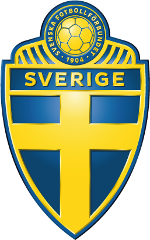

Sveriges VM-ögonblick är en sida som går igenom dom absolut bästa ögonblicken i svensk fotbolls VM-historia.
Vi är passionerade sportfantaster med ett extra stort hjärta för svensk fotbollshistoria. Genom att samla fakta, bilder och minnen från Sveriges mest framgångsrika VM-turneringar vill vi göra det enkelt och roligt för både gamla och nya fans att återuppleva den blågula magin.
Här får du en genomgång av det bästa som Sverige mäktat med i VM än så länge.
Erik och Sedat - Vi är två fotbollsälskare som kan fotboll.